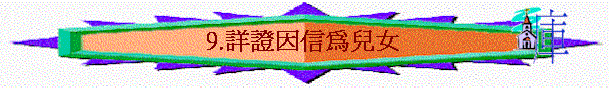

第九課 詳證因信為兒女
〔四：２１－３１〕
本課要旨：保羅在引述亞伯拉罕兩個妻妾和兩個兒子的歷史，作為解釋。他們乃代表兩約：應許之約與律法之約。最後引出我們不再是在律法下作奴僕，乃是憑應許得自由作神的兒女了。
１．在〔四２１－２２〕所提及之「律法」是指甚麼﹖
２．請員兩位組員分別簡述：〔四：２２〕
ａ．夏甲的地位及以實瑪利出生的經過。〔創十六：１－２；４－６；１５〕
ｂ．撒拉的地位及以撒出生並神應許的經過。〔創十五：４－６，十七：１５－２１；廿一：１－２〕
３．請參照〔四：２２－３１〕，把有關夏甲與撒拉的對比，按下表填上適當的答案：
| 夏甲 | 撒拉 |
| 律法（舊約） | 1. |
| 2. | 自主婦人 |
| 按血氣生的 | 憑應許生的 |
| 按血氣生的 | 3. |
| 4. | 自主兒女(得自由) |
| 現今的耶路撒冷 | 5. |
| 逼迫人的 | 6.. |
４．試解釋為何夏甲所生的是「按著血氣生的」而撒拉生的是「憑應許生的」。此事對我們有何啟發﹖注意神應許的經過。〔四：２２－２３〕
５．兩個婦人分別代表甚麼﹖〔四：２４〕
６．從〔四：２５〕中：
ａ．「夏甲」二字有何含意﹖（註一）
ｂ．「．．．西乃山與現在的耶路撒冷同類」是甚麼意思﹖
７．「天上的耶路撒冷」代表甚麼﹖最後怎樣顯現﹖〔來十一：１０；十二：２２；啟三：１２；廿一：２〕
８．耶路撒冷如何成為我們的「母」﹖是甚麼意思﹖保羅為何又引用〔賽五四：１〕以作解釋﹖〔四：２６－２７〕（註二）
９．保羅兩次運字義釋經法，此方法我們可否參長﹖
10．我們成為神的兒女，與以撒的出生有何相似之處﹖〔四：２８；參四
：２９；三：２６〕
ａ．
ｂ．
ｃ．
11．你想現代的「律法主義者」、「按血氣生的人」會怎樣對待神的兒女們呢﹖試分享你的經歷。〔四：２９〕
12．保羅引用〔四：３０〕的經文「把使女和他兒子趕出去」有何用意﹖〔四：３０－３１；創廿一：１－１３〕
第九課附註：
註一：「夏甲」二字原文是屬中性的字。
註一：「母」原文是單數，屬陰性。
參考答案
第九課：詳證因信為兒女
１．不是指西乃山的律法，而是概括指到摩西五經，因猶太人稱摩西五經為律法書，參〔申一：５；四：４４－４５；三一：９－１３，２４－２６；書一：７－８〕。
３．1. 應許（新約），〔２３，２４，２８〕；2.使女；3. 按聖靈生的；4. 生子為奴；5. 天上的耶路撒冷〔２６〕；6. 逼迫人的〔２９〕，受逼迫的〔２９〕。
４．神在亞伯拉罕無子之前，應許他必要生子，後裔眾多〔創十五：４〕，但因亞伯拉罕及撒拉信心的軟弱，他們便用自己的意思，立夏甲為妾，後生出以實瑪利，正是「按血氣」的方法生出，而非用信心相信神會用大能成就祂的應許。而以撒之所以是「憑應許生的」，因為在撒拉在生理上已絕無可能生育時（九十歲）〔創十七：１７；十八：１１〕，卻是用信心接上神的應許〔創十七：６－８，１９〕而生出以撒的。我們也要多學習經歷用信心接上神各樣的應許，而不用自己血氣的方法作事。
５．撒拉代表應許，夏甲代表律法。
６．ａ．夏甲按字義來說，就是西乃山〔四：２５〕，有屬靈的預表：就是西乃律法之約，因律法出於西乃〔出十九：１，２；廿四：４－８〕
ｂ．「現在的耶路撒冷」代表保羅寫信當時的耶路撒冷，指猶太教的根據地。按猶太教的性質是與福音反對，和西乃律法的性質相同，叫人為奴、受捆綁。
７．代表天上的聖城，是聖徒的家鄉，最後會從天而降。
８．因為天上的耶路撒冷代表撒拉，而〔四：２５〕明說撒拉正是預表神應許的約，在此我們因而得生〔三：２２－２６〕，所以我們也當作是由撒拉而生；因此天上的耶路撒冷便成為了我們的母親。這也應驗了〔賽五四：１〕「你這不懷孕、不生養．．．」的預言。此節中的「你」乃是單數的（KJV譯 " Thou "），而此段經文是緊接在預言主耶穌作救贖主之後〔賽五三〕。按這個「你」的本質原是沒有丈夫的〔四：２７；賽五四：１〕，因她其實不是人，卻需要救贖〔賽五四：５〕，而神卻是她的丈夫，她作妻子〔五四：５，６〕。可見這段預言其實是指著天上的耶路撒冷而言。
９．我們可運用現時各中英文的聖經譯本、豐富的工具參考書，來發掘原文字義的真正意思。
10．ａ．憑應許生的〔四：２９〕；ｂ．按聖靈生的〔四：２９〕；ｃ．憑信而生〔三：２６〕。
11．他們會逼迫憑信心信靠神的應許的人，因那些人只知道人的意思，並不知道神的心意。
12．此處的著重點在於那自主婦人的兒子，他將來是要承受產業的，而我們是神的兒女，將來要承受神的產業。